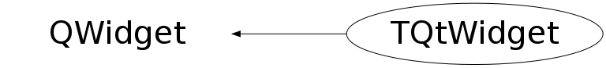

class TQtWidget: public QWidget
TQtWidget is a QWidget with the QPixmap double buffer It is designed to back the ROOT TCanvasImp class interface and it can be used as a regular Qt Widget to create Qt-based GUI with the embedded TCanvas objects This widget can be used as a Qt "custom widget" to build a custom GUI interfaces with Qt Designer The class emits the Qt signals and has Qt public slots Public slots: (Qt) virtual void cd(); // make the associated TCanvas the current one (shortcut to TCanvas::cd()) virtual void cd(int subpadnumber); // as above - shortcut to Canvas::cd(int subpadnumber) void Disconnect(); // disconnect the QWidget from the ROOT TCanvas (used in the class dtor) void Refresh(); // force the associated TCanvas::Update to be called virtual bool Save(const QString &fileName) const; // Save the widget image with some ppixmap file virtual bool Save(const char *fileName) const; virtual bool Save(const QString &fileName,const char *format,int quality=60) const; virtual bool Save(const char *fileName,const char *format,int quality=60) const; signals (Qt) CanvasPainted(); // Signal the TCanvas has been painted onto the screen Saved(bool ok); // Signal the TCanvas has been saved into the file RootEventProcessed(TObject *selected, unsigned int event, TCanvas *c); // Signal the Qt mouse/keyboard event has been process by ROOT // This "signal" is emitted by the enabled mouse events only. // See: EnableSignalEvents // --- DisableSignalEvents public methods: The methods below define whether the TQtWidget object emits "RootEventProcessed" Qt signals (By default no RootEventProcessed Qt signal is emitted ) void EnableSignalEvents (UInt_t f) void DisableSignalEvents(UInt_t f), where f is a bitwise OR of the mouse event flags: kMousePressEvent // TCanvas processed QEvent mousePressEvent kMouseMoveEvent // TCanvas processed QEvent mouseMoveEvent kMouseReleaseEvent // TCanvas processed QEvent mouseReleaseEvent kMouseDoubleClickEvent // TCanvas processed QEvent mouseDoubleClickEvent kKeyPressEvent // TCanvas processed QEvent keyPressEvent kEnterEvent // TCanvas processed QEvent enterEvent kLeaveEvent // TCanvas processed QEvent leaveEvent For example to create the custom responce to the mouse crossing TCanvas connect the RootEventProsecced signal with your qt slot: connect(tQtWidget,SIGNAL(RootEventProcessed(TObject *, unsigned int, TCanvas *)) ,this,SLOT(CanvasEvent(TObject *, unsigned int, TCanvas *))); . . . void qtrootexample1::CanvasEvent(TObject *obj, unsigned int event, TCanvas *) { TQtWidget *tipped = (TQtWidget *)sender(); const char *objectInfo = obj->GetObjectInfo(tipped->GetEventX(),tipped->GetEventY()); QString tipText ="You have "; if (tipped == tQtWidget1) tipText +="clicked"; else tipText +="passed"; tipText += " the object <"; tipText += obj->GetName(); tipText += "> of class "; tipText += obj->ClassName(); tipText += " : "; tipText += objectInfo; QWhatsThis::display(tipText) }
Function Members (Methods)
public:
| TQtWidget(QWidget* parent = 0) | |
| virtual | ~TQtWidget() |
| static TCanvas* | Canvas(TQtWidget* widget) |
| static TQtWidget* | Canvas(const TCanvas* canvas) |
| static TQtWidget* | Canvas(Int_t id) |
| virtual void | cd() |
| virtual void | cd(int subpadnumber) |
| static TClass* | Class() |
| void | DisableSignalEvents(UInt_t f) |
| void | Disconnect() |
| void | EmitSignal(UInt_t f) |
| void | EmitTestedSignal() |
| void | EnableSignalEvents(UInt_t f) |
| virtual void | Erase() |
| UInt_t | GetAllBits() const |
| const TQtWidgetBuffer* | GetBuffer() const |
| TCanvas* | GetCanvas() const |
| Int_t | GetEvent() const |
| Int_t | GetEventX() const |
| Int_t | GetEventY() const |
| QPixmap* | GetOffScreenBuffer() const |
| TObject* | GetSelected() const |
| TVirtualPad* | GetSelectedPad() const |
| Int_t | GetSelectedX() const |
| Int_t | GetSelectedY() const |
| static TApplication* | InitRint(Bool_t prompt = kFALSE, const char* appClassName = "QtRint", int* argc = 0, char** argv = 0, void* options = 0, int numOptions = 0, Bool_t noLogo = kTRUE) |
| void | InvertBit(UInt_t f) |
| virtual TClass* | IsA() const |
| bool | IsDoubleBuffered() const |
| Bool_t | IsSignalEventEnabled(UInt_t f) const |
| virtual QSize | minimumSizeHint() const |
| void | Refresh() |
| void | ResetBit(UInt_t f) |
| virtual bool | Save(const QString& fileName) const |
| virtual bool | Save(const char* fileName) const |
| virtual bool | Save(const QString& fileName, const char* format, int quality = 60) const |
| virtual bool | Save(const char* fileName, const char* format, int quality = 60) const |
| void | SetAllBits(UInt_t f) |
| void | SetBit(UInt_t f) |
| void | SetBit(UInt_t f, Bool_t set) |
| TQtWidgetBuffer& | SetBuffer() |
| void | SetCanvas(TCanvas* c) |
| void | SetCanvasDecorator(TQtCanvasPainter* decorator) |
| void | SetDoubleBuffer(bool on = TRUE) |
| virtual void | SetSaveFormat(const char* format) |
| virtual void | ShowMembers(TMemberInspector& insp) |
| virtual QSize | sizeHint() const |
| virtual QSizePolicy | sizePolicy() const |
| virtual void | Streamer(TBuffer& b) |
| void | StreamerNVirtual(TBuffer& b) |
| Bool_t | TestBit(UInt_t f) const |
| Int_t | TestBits(UInt_t f) const |
protected:
| void | AdjustBufferSize() |
| TCanvas* | Canvas() |
| TQtCanvasPainter* | CanvasDecorator() |
| virtual void | contextMenuEvent(QContextMenuEvent*) |
| virtual void | customEvent(QEvent*) |
| virtual void | EmitCanvasPainted() |
| virtual void | enterEvent(QEvent*) |
| virtual void | exitSizeEvent() |
| virtual void | focusInEvent(QFocusEvent*) |
| virtual void | focusOutEvent(QFocusEvent*) |
| QWidget* | GetRootID() const |
| void | Init() |
| virtual void | keyPressEvent(QKeyEvent*) |
| virtual void | keyReleaseEvent(QKeyEvent*) |
| virtual void | leaveEvent(QEvent*) |
| virtual void | mouseDoubleClickEvent(QMouseEvent*) |
| virtual void | mouseMoveEvent(QMouseEvent*) |
| virtual void | mousePressEvent(QMouseEvent*) |
| virtual void | mouseReleaseEvent(QMouseEvent*) |
| virtual void | paintEvent(QPaintEvent*) |
| bool | paintFlag(bool mode = TRUE) |
| bool | PaintingActive() const |
| void | ResetCanvas() |
| virtual void | resizeEvent(QResizeEvent*) |
| void | SetIgnoreLeaveEnter(int ignore = 1) |
| void | SetRootID(QWidget* wrapper) |
| virtual void | SetSizeHint(const QSize& size) |
| virtual void | showEvent(QShowEvent*) |
| virtual void | stretchWidget(QResizeEvent* e) |
Data Members
protected:
| TCanvas* | fCanvas | |
| bool | fDoubleBufferOn | |
| bool | fEmbedded | |
| int | fIgnoreLeaveEnter | |
| bool | fInsidePaintEvent | |
| QPoint | fOldMousePos | |
| bool | fPaint | |
| TQtWidgetBuffer* | fPixmapID | Double buffer of this widget |
| TQtWidgetBuffer* | fPixmapScreen | Double buffer for no-double buffer operation |
| QTimer* | fRefreshTimer | |
| QString | fSaveFormat | |
| bool | fSizeChanged | |
| QSize | fSizeHint | |
| QWidget* | fWrapper |
private:
| UInt_t | fBits | bit field status word |
| bool | fNeedStretch |
Class Charts
{kind=link}
{kind=link}
{kind=link}
{kind=link}

Function documentation
void Init()
TApplication * InitRint(Bool_t prompt = kFALSE, const char* appClassName = "QtRint", int* argc = 0, char** argv = 0, void* options = 0, int numOptions = 0, Bool_t noLogo = kTRUE)
Instantiate ROOT from within Qt application if needed Return the TRint pointer Most parametrs are passed to TRint class ctor Bool_t prompt = kTRUE; Instantiate ROOT with ROOT command prompt kFALSE; No ROOT prompt. The default for Qt GUI applications The prompt option can be defined via ROOT parameter file ".rootrc" .rootrc: . . . Gui.Prompt yes
void Disconnect()
[slot] Disconnect the Qt widget from TCanvas object before deleting to avoid the dead lock one has to set CanvasID = 0 to disconnect things properly.
void Refresh()
customEvent(QEvent* )
The custom response to the special WIN32 events These events are not present with X11 systems
void contextMenuEvent(QContextMenuEvent* )
The custom response to the Qt QContextMenuEvent Map QContextMenuEvent to the ROOT kButton3Down = 3 event
void focusInEvent(QFocusEvent* )
The custom response to the Qt QFocusEvent "in" this imposes an extra protection to avoid TObject interaction with mouse event accidently
void focusOutEvent(QFocusEvent* )
The custom response to the Qt QFocusEvent "out" this imposes an extra protection to avoid TObject interaction with mouse event accidently
void mousePressEvent(QMouseEvent* )
void mouseMoveEvent(QMouseEvent* )
void mouseReleaseEvent(QMouseEvent* )
void mouseDoubleClickEvent(QMouseEvent* )
void keyReleaseEvent(QKeyEvent* )
void enterEvent(QEvent* )
void leaveEvent(QEvent* )
void resizeEvent(QResizeEvent* )
The widget will be erased and receive a paint event immediately after processing the resize event. No drawing need be (or should be) done inside this handler.
bool Save(const char* fileName) const
TQtWidget::Save(const QString &fileName) is a public Qt slot. it saves the double buffer of this object using the default save format defined the file extension If the "fileName" has no extension the "default" format is to be used instead The deafult format is "PNG". It can be changed with the TQtWidget::SetSaveFormat method
bool Save(const QString& fileName) const
TQtWidget::Save(const QString &fileName) is a public Qt slot. it saves the double buffer of this object using the default save format defined the file extension If the "fileName" has no extension the "default" format is to be used instead The deafult format is "PNG". It can be changed with the TQtWidget::SetSaveFormat method
bool Save(const char* fileName, const char* format, int quality = 60) const
bool Save(const QString& fileName, const char* format, int quality = 60) const
void showEvent(QShowEvent* )
Custom handler of the Qt show event Non-spontaneous show events are sent to widgets immediately before they are shown. The spontaneous show events of top-level widgets are delivered afterwards.
void paintEvent(QPaintEvent* )
Custom handler of the Qt paint event A paint event is a request to repaint all or part of the widget. It can happen as a result of repaint() or update(), or because the widget was obscured and has now been uncovered, or for many other reasons.
void EmitTestedSignal()